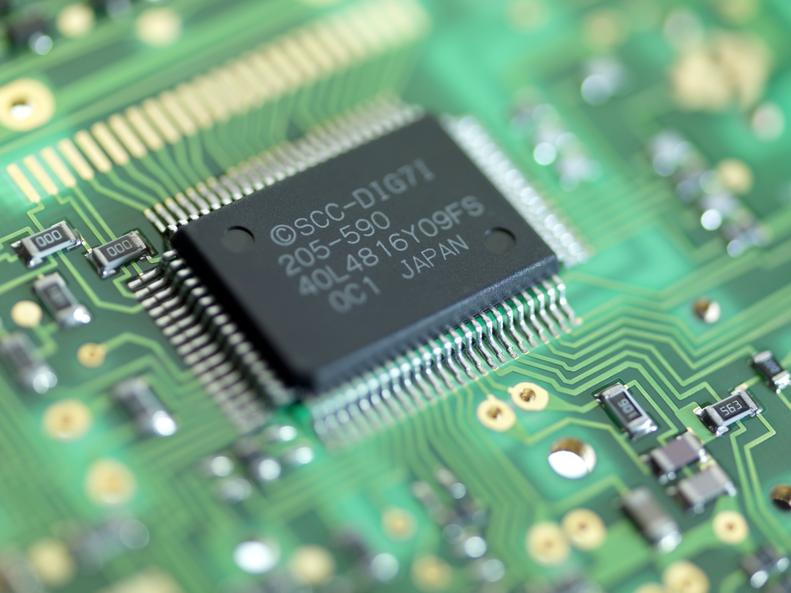

Computer Building: Where to Start
Building yor own PC can give you a lot of options. Compared to buying a prebuilt, building your own computer might not
take as much effort as you think. Building your own computer and choosing parts allows for a highly customizable
piece of machinery tailored just to your needs. Buying a prebuilt might be easier overall, but the benefit of building
your own PC is miles ahead.
What You'll Need
The Case
Choosing a case for your computer depends on what you're looking for.
The case can set the tone for the built, a bigger case allowing for more storage.
A smaller case might be needed if you don't have the space or depending on what
you're looking for. The only concern is that you need to match your motherboard's
form factor with your case's specifications.
The Motherboard
Shopping for a motherboard can have many nuiances, but you generally need to research three things.
You want to make sure the motherboard you choose works with the CPU you choose. The motherboard also
needs to be the right size and shape for your case. You also need to make sure the motherboard has both
external and interal ports for what you want to install.
The CPU

When you choose your motherboard, you have to choose your CPU, as the two go hand in hand.
Like choosing your motherboard, there are a lot of decisions you have to make. Depending
on the use for the computer, what you can afford, and even up to your power consumption,
there are a lot of choices to make.
The GPU
GPU's are the computers graphics processing unit. Some CPU's have a GPU already, but if you
plan on gaming, video editing, or anything else that requires high processing, you should invest in
a GPU.
The Ram
The RAM (Random Access Memory) is the hardware in a device that provides temporary storage for the
operating system (OS), software programs, or any other data that is currently being used. RAM allows the
user to switch between programs easily, and it can remember where you last left off. It also allows
for fast access to your data, and many more. RAM is temporary storage for your computer, and
without it your computer will not work.
The Fans
Having a cooling system in your PC is essential. Fans help keep the system cool, and prevent overheating.
Without having a fan, you won't get very far. Many softwares or even computer games
heat your CPU and GPU.
The PSU
The PSU (Power Supply Unit) converts AC electricity into DC electricity and dispenses it into
the rest of the computer. Although the motherboard also distributes power, as if the PSU was the sole
provider, there would be many wires. When buying a PSU, you have to pay attention to their power
rating. There are different types of PSU's depending on what you're searching for.
The SSD
SSD (Solid-State Drive) is a storing device that saves your data. Unlike the ram, it holds
this data long-term. You could opt for HDD, but they are slower and are less durable.